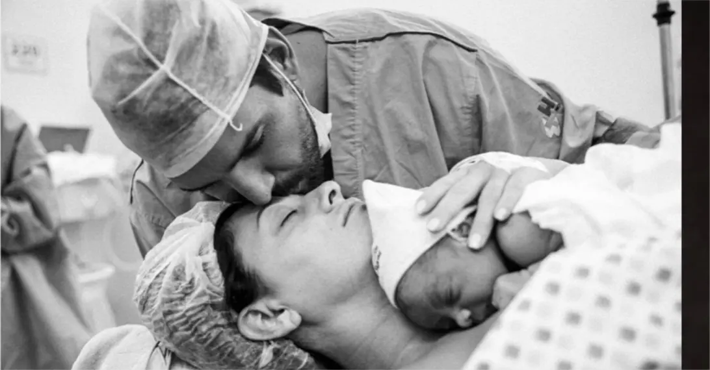

Felipe Pezzoni fala sobre mistura de ritmos em novo DVD da Banda Eva: ‘A gente não quis se limitar’
Projeto foi lançado no dia 22 de julho e já pode ser acessado no Globoplay
Pagode e reggae, ritmos diferentes do tradicional axé da Banda Eva, mas que fazem parte do novo DVD do grupo, lançado no último dia 22 de julho. “Sem Filtro” tem a participação de Maneva, Babado Novo e a ilha paradisíaca de Fernando de Noronha como cenário.
OUVIR
A essência é sem filtro porque a gente não quis se limitar a ‘isso é ou não axé’. Quisemos fazer música
Vocalista Felipe Pezzoni
Foto: Reprodução.
Em entrevista ao Jornal Massa, o vocalista Felipe Pezzoni falou sobre as inspirações, dificuldades e bastidores do novo projeto. “A essência é sem filtro porque a gente não quis se limitar a ‘isso é ou não axé’. Quisemos fazer música”, explica, descrevendo a mistura de ritmos.
Em entrevista ao Jornal Massa, o vocalista Felipe Pezzoni falou sobre as inspirações, dificuldades e bastidores do novo projeto. “A essência é sem filtro porque a gente não quis se limitar a ‘isso é ou não axé’. Quisemos fazer música”, explica, descrevendo a mistura de ritmos.
“O som veio depois do que eu vi, tentei explicar o que aquele visual trazia para nós. Foi o visual que trouxe a sonoridade. O todo me deu de presente a trilha sonora”, diz Felipe.
A construção do repertório teve influência do cenário paradisíaco, o que não deixou dúvidas na escolha do local para a gravação. “No final do processo a gente entendeu que não fomos nós que escolhemos a ilha, foi ela que nos escolheu. Quando terminou, falei: ‘não, tinha como não ser aqui'”, revela o artista.
“O som veio depois do que eu vi, tentei explicar o que aquele visual trazia para nós. Foi o visual que trouxe a sonoridade. O todo me deu de presente a trilha sonora”, diz Felipe.
A construção do repertório teve influência do cenário paradisíaco, o que não deixou dúvidas na escolha do local para a gravação. “No final do processo a gente entendeu que não fomos nós que escolhemos a ilha, foi ela que nos escolheu. Quando terminou, falei: ‘não, tinha como não ser aqui'”, revela o artista.
ENTREVISTA COM FELIPE PEZZONI
1:23:45
“É uma música que veio na minha cabeça. Estava compondo, me veio o refrão e pensei: ‘conheço ela de algum lugar'”, afirma sobre a canção originalmente interpretada pela dupla sertaneja Leandro & Leonardo.
Outra composição que chama atenção é “Louca”. A música, que foge do habitual axé, mistura o reggae e pop, marcando um novo processo da banda, que vem buscando a conexão com outros ritmos, incluindo o samba.
CAPA DO ALBUM.PDF
10,53.mb
Ao ser perguntado sobre a união dos gêneros, Felipe explica: “Ao juntar reggae e samba temos o ‘samba reggae’, e isso é a energia da Bahia, foi o que queríamos trazer. Tem a ligação, os nossos laços e sangue com o axé”.
Dificuldades
Apesar de parecer uma escolha perfeita, a paisagem de Noronha causou certa incerteza no cantor. Ele explica que a dificuldade em levar materiais para a ilha fez com que pensasse que o projeto não daria certo.
“Eu não conseguia ver a viabilidade nisso porque é muito difícil produzir alguma coisa lá. Qualquer coisa que você faça na ilha é muito complicado, as coisas tem que chegar de navio”, diz.
Foi intuitivo, natural, as músicas foram aparecendo. Não tivemos muito tempo de preparação, mas o processo foi tão fluido que as músicas foram pintando
Com curto tempo de produção, o músico conta que tudo teve que acontecer de maneira orgânica para que funcionasse bem, e que esse foi o maior diferencial do projeto. “Foi intuitivo, natural, as músicas foram aparecendo. Não tivemos muito tempo de preparação, mas o processo foi tão fluido que as músicas foram pintando”, relembra.
Felipe conta que outra dificuldade foi ter passado um tempo longe de casa por causa das gravações. “Antes era um só, mas agora é a saudade de três filhos. É bem difícil a ausência, mas tudo é para eles. Então tentei otimizar meu tempo para estar mais com eles quando estava aqui”, afirma.

Foto: Reprodução.
leia também
Dj Zullu lança single com Pocah e anuncia primeiro EP ‘Pra Elas’
há 2 min
Dj Zullu lança single com Pocah e anuncia primeiro EP ‘Pra Elas’
há 2 min
Dj Zullu lança single com Pocah e anuncia primeiro EP ‘Pra Elas’
há 2 min
Dj Zullu lança single com Pocah e anuncia primeiro EP ‘Pra Elas’
há 2 min
Dj Zullu lança single com Pocah e anuncia primeiro EP ‘Pra Elas’